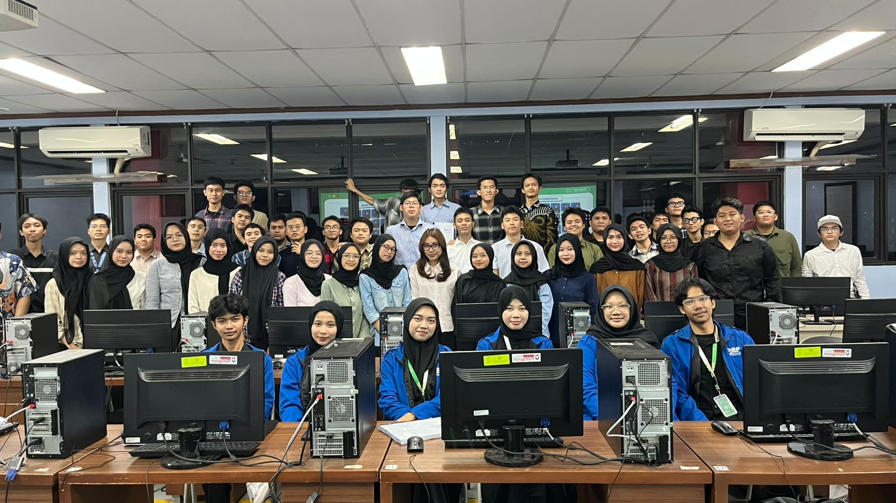
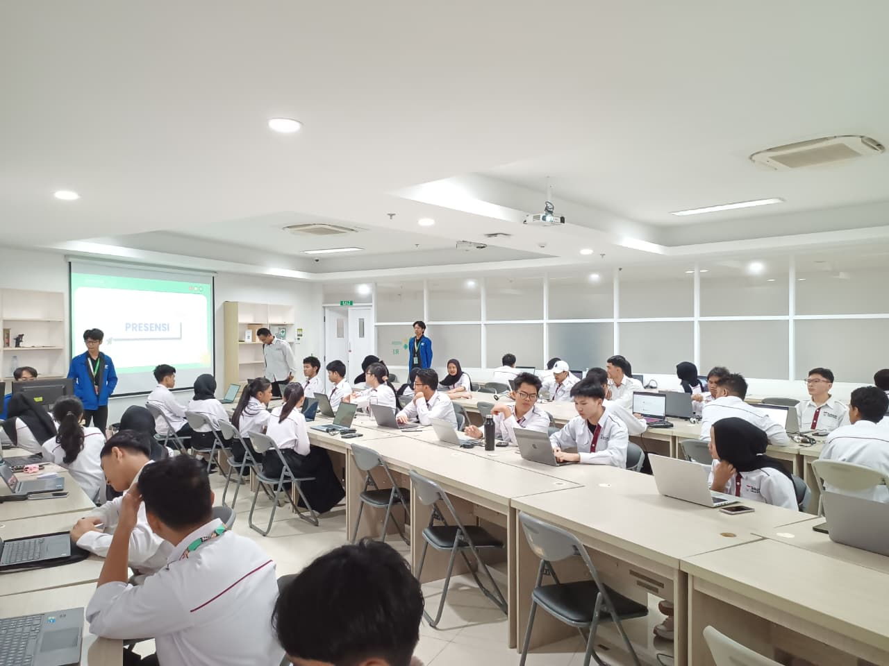
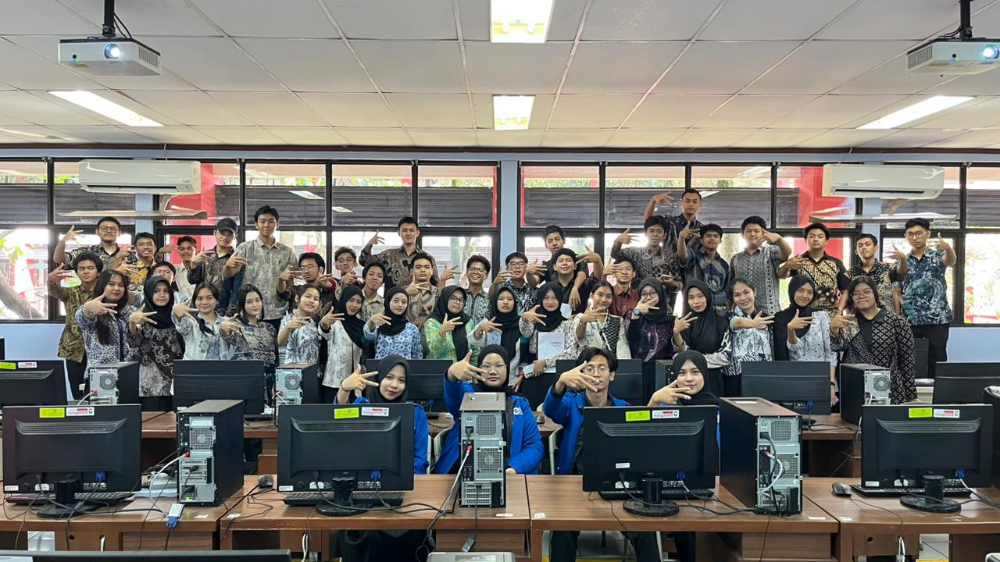

01 / ROLE OVERVIEW
The Experience
During my SAP01 Enterprise Systems practicum experience, I supported students in understanding foundational SAP navigation and enterprise business-process concepts. I guided groups of 40-45 students through selected exercises involving system navigation, transaction workflows, and introductory processes across procurement, finance, and human capital. I also provided troubleshooting assistance during live practicum sessions, helping students identify navigation or transaction-execution issues.
02 / RESPONSIBILITIES & CONTRIBUTIONS
What I Supported
SAP Practicum Guidance
Guided students through SAP01 exercise instructions and relevant screens for the task at hand.
Functional Troubleshooting
Provided hands-on assistance when students encountered navigation errors or difficulty executing transactions during live lab sessions.
Enterprise Process Explanation
Connected foundational SAP exercises with the broader business processes they represented.
03 / SELECTED LEARNING ACTIVITIES
From Concepts to Practice
System Navigation & User Interface
SAP01 introduces SAP access, interface navigation, transaction paths, and transaction codes.
Helped learners locate the relevant menu or transaction entry point and follow the exercise instructions.
Integrated Logistics Process
Logistics exercises connect purchase orders, goods receipts, and vendor invoices.
Related each transaction to the document reference that carries the workflow forward.
Cross-Module Business Processes
Enterprise systems connect activities across procurement, finance, and human capital.
Connected selected module examples to illustrate how different business functions operate within a wider enterprise system.
04 / MATERIALS AND ACADEMIC SUPPORT
Resources Behind the Work
These visual summaries describe learning and support resources. They are illustrative diagrams, not official system screenshots or claims of sole authorship.
Navigation
Reference material for SAP access, interface navigation, transactions, and transaction codes.
ILLUSTRATIVE LEARNING AID · NOT AN OFFICIAL SYSTEM SCREENLogistics
Practice material covering procurement, purchase orders, goods receipt, and invoice processing.
ILLUSTRATIVE LEARNING AID · NOT AN OFFICIAL SYSTEM SCREENFinance & Human Capital
Practicum references introducing financial and management accounting and basic HCM processes.
ILLUSTRATIVE LEARNING AID · NOT AN OFFICIAL SYSTEM SCREEN05 / DOCUMENTATION
Snapshots from the Experience
Authentic documentation supplied for this experience. Captions describe the visible activity without adding unverified outcomes.



SKILLS DEMONSTRATED